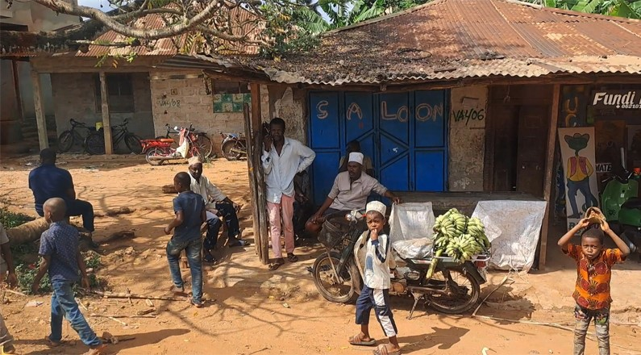
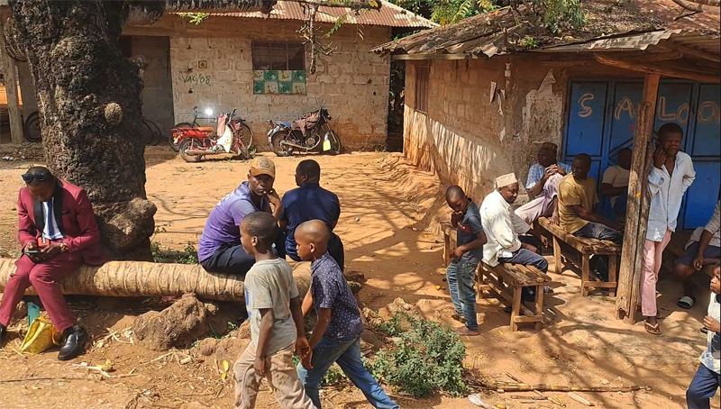
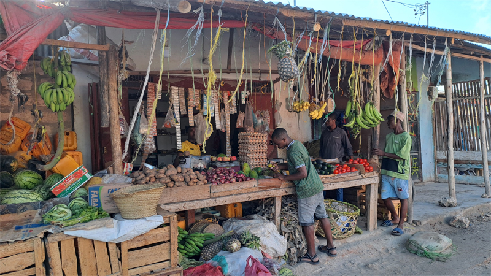
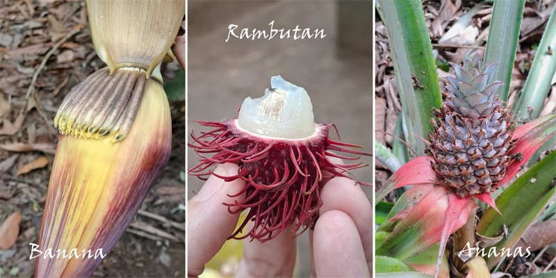
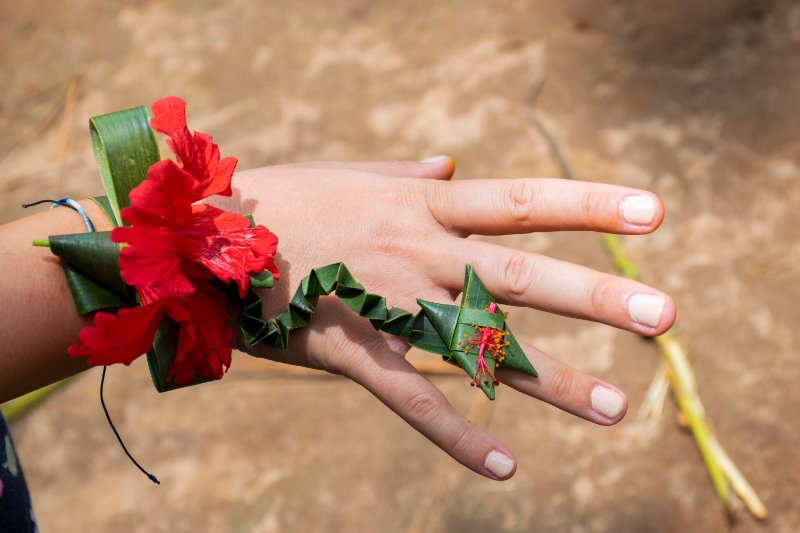
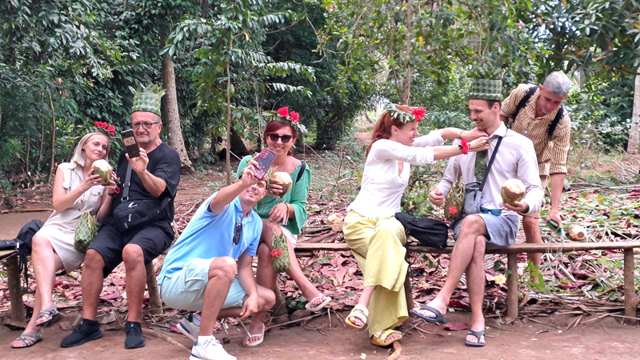
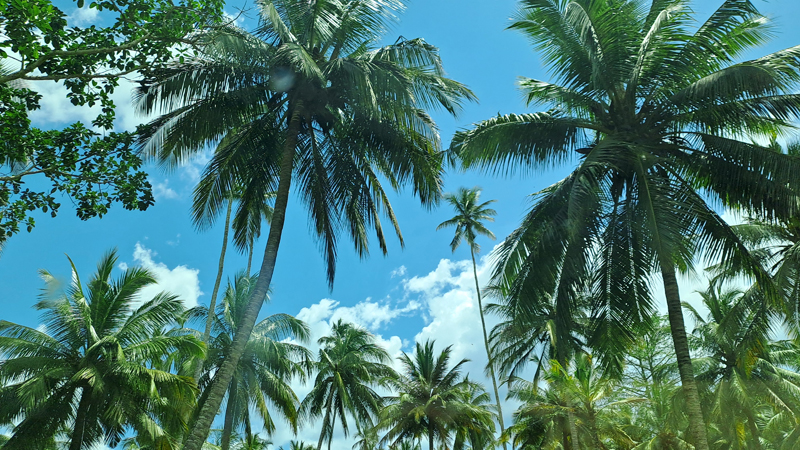

Farma začina
Od izleta, na prvu mi se ovaj najmanje svideo. Da saznajem kako izgledaju biljke od kojih se prave začini umesto da se izležavam na plaži? Ne baš.
Predomislila sam se kad sam pročitala da ima i degustacija voća. To me je već zanimalo.
Međutim, najinteresantnije mi je bilo razgledanje unutrašnjosti ostrva dok smo se vozili ka destinaciji.



Na putu ka izletima viđamo škole bez stakla na prozorima. Neko kaže: „Šta će im?“
Naišli smo na vojsku, nepregledna kolona vojnika. Pevaju i nose mitraljeze. Na glavi su im crvene francuske beretke. Ima i dosta kamiona.
Put po ostrvu se sastoji od dve trake. Pored su banane, palme, škole, pijaca, seoca. Bilo je skretanje na levo ka mestu koje se zove Bububu. To mi je smešno.
Još jedna zemlja u nizu gde voze levom stranom (posle Malte, Kipra, Japana, Indije). Limeni krovovi prizemnih kuća i poneka satelitska antena.
Prvi izlet nam je farma začina. Oprali su nam ruke nad plastičnom ćasom (polili vodom) i spremni smo za degustaciju voća.
Džek frut mi je nepoznat. Mešavina je ananasa i banane, ukusan ali ljigav. Pravi se i lepak od njega. Rambutan je kao grožđe. Dalje: lubenica, narandža. Pomelo mi je grejpfrut "wanna be", ananas, mango - sve smo to probali.
Ananas im je odličan, sočan i sladak kao naš iz konzerve. Oni ga zovu nanasi.
Zingi furi je biljka čiji plod kad se otvori pušta neku narandžasto-crvenu boju koja može da se koristi za ruževe.
Karanfilić je king of spices, gold of Zanzibar; koristio se za čišćenje zuba i osvežavanje daha.
Biber je jedna biljka čiji plod menja boje kako zri.
Muškatni oraščić se koristi za ukidanje sramežljivosti. Sve bude hakuna matata. Verovatno ima blaga opojna dejstva.
Tikovina je najskuplje drvo. Četiri najmlađa lista prokuvaju sa solju i dobiju crvenu boju za bojenje tkanine. Kad smo ih trljali, prsti su nam izgledali krvavo.
Kardamon se koristi za spavanje. Umiruje. Daju i bebama da ne plaču.
Od jedne latice cveta banane nastane jedan grozd banana.

Vanila je najskuplja posle šafrana. Puzavica je kao i biber. Dole na zemlji drže kokos da zadrži vlagu.
Kasava koren skuvaš i jedeš umesto hleba. Masai ne jedu hleb nego kasavu, krompir, banane - posebnu vrstu. Počastili su nas kasavom u Masai smeštaju, kasnije.
Touch me not liči na travu rezbarenog lista, zasade ga po dvorištu da se deca igraju jer se list momentalno zatvara na dodir, pa im je to zanimljivo.
Banana iz korena pusti bebu bananu.
Postoje muška i ženska papaja. U stvari muška je papaja, a ženska je mamaja.
Cimet kad poraste odseku stablo i koriste koru, a rađaju se bebe okolo kao kod banane.
Kepok je bodljikavo drvo, sa baš ozbiljnim bodljama po debelom stablu, a plod je kao pamuk i služi za punjenje jastuka.
Ananas - jedna biljka, daje samo jedan plod; zovu ga nanasi. Godinu dana raste. Mama rađa 3 godine i onda pusti bebe. Može da se razmnoži tako što se ćubica ananasa stavi u zemlju i to je to.
Langi lang ima cvet koji je lepog mirisa. Od njega se pravi parfem. Chanel nula ga zovu.
Kad beru kokos, pevaju glasno, da drugi koji prolaze znaju i sklone se da im kokos ne padne na glavu. Što može biti i smrtonosno. Imali smo demonstraciju penjanja, pevanja i branja.
Dobili smo poklone na ovom izletu. Od palminog lišća su nam napravili krune, tašnice, prsten, narukvice, muškarcima kravate i krune. Baš je lepo i pažljivo.


.jpg)
Eto, od svih izleta ovaj me je najmanje privlačio, misleći: informacije mogu da nađem i na internetu, a bila sam baš srećna i lepo sam se provela. Dobro je da ga nisam propustila.
Među palmama smo jeli ekstra ukusan ručak sa puno priloga. Slatko nešto od banane i drugo od bundeve. Odlično se jede u Africi. Jeli smo zajedno, svi sa izleta, pa je time bilo još slađe.
Masala znači mešavina. A ja, tupson u Indiji, mislila sam da je to neki njihov poseban začin.
Stigli smo na kupanje popodne. Prija u toj lepoj vodici sa belim peskom u lepom okruženju. Međutim, moderno im je da iznajmljuju baš lepe konje da se jašu kroz vodu. Postoji i čovek, hvatač govanaca, koji ide sa mrežicom za njima i skuplja, međutim voda ostane braon. Tako da dalje od konja kad ih vidite u vodi.
Sreli smo Masaija Tomasa i rekao mi je da sam njegov rafiki (drug) jer sam good. Malo sam bila ponosna.
Nešto mi čudno što nema majmuna po ulicama kao u Indiji.
Izgleda im je moda da boje škole na pola (belo-plave, žuto-zelene). Takve su im i uniforme, u dve boje.
Smešno mi je bilo kad je Olbina gledala slike bez naočara i rekla: „Ovde sam baš dobro ispala“, a ono crnkinja na slici. A Olbina plavušica, ne može biti svetlija.
.jpg)
.jpg)
